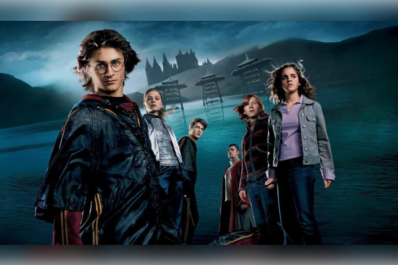
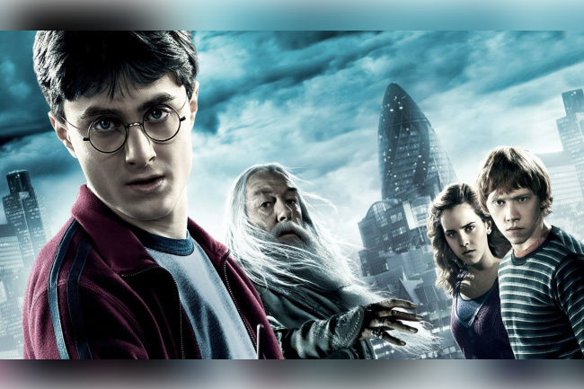

Date de sortie : 2005
Réalisateur : Mike Newell
Acteurs principaux : Daniel Radcliffe, Emma Watson, Rupert Grint
Résumé : Lorsque le nom de Harry Potter est tiré de la Coupe de Feu, il se retrouve plongé dans un tournoi dangereux entre les trois plus grandes écoles de sorcellerie.

Date de sortie : 2009
Réalisateur : David Yates
Acteurs principaux : Daniel Radcliffe, Emma Watson, Rupert Grint
Résumé : Harry Potter commence sa sixième année à Poudlard et découvre un livre mystérieux qui lui révèle des informations sur le passé de Voldemort.
